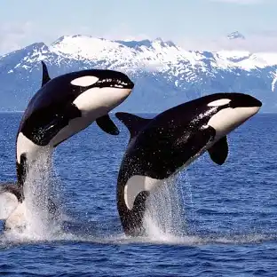
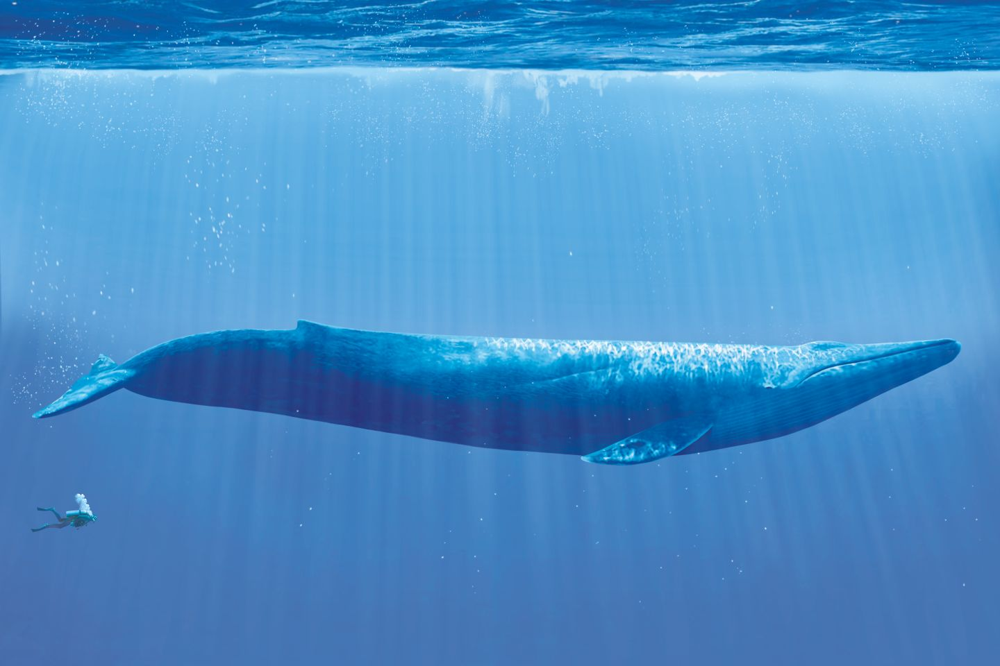
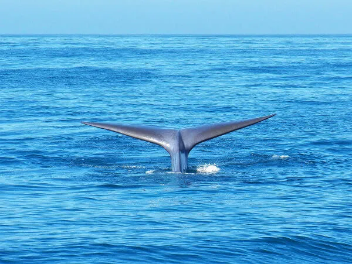
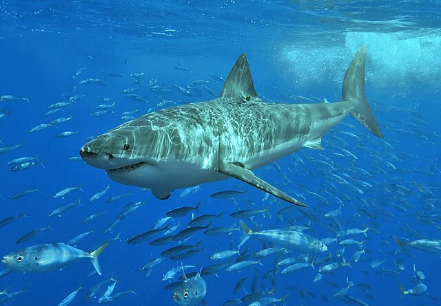
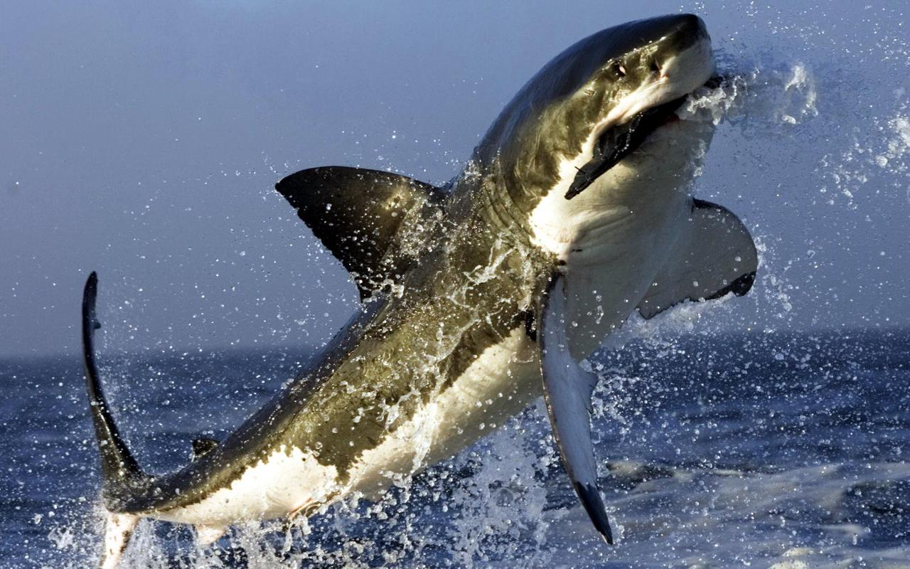

A Orca é o membro da família dos golfinhos de maior porte e é um superpredador versátil, que inclui na sua dieta presas como peixes, moluscos, aves, tartarugas, focas, tubarões e animais de tamanho maior quando caçam em grupo, como por exemplo baleias.


A baleia-azul é um mamífero marinho pertencente à subordem dos misticetos dos cetáceos. Com até 30 metros de comprimento e mais de 180 t de peso, são os maiores animais que já existiram.


